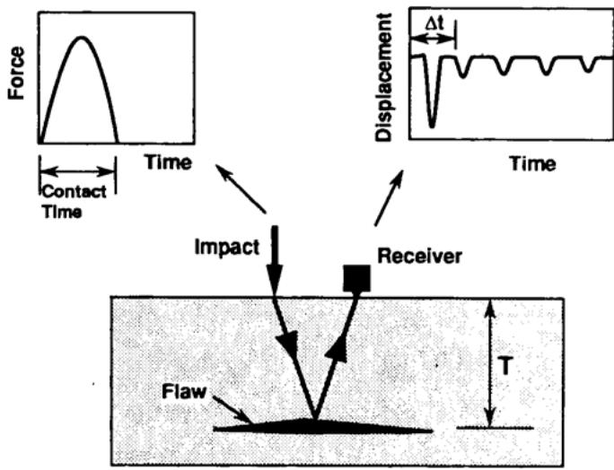
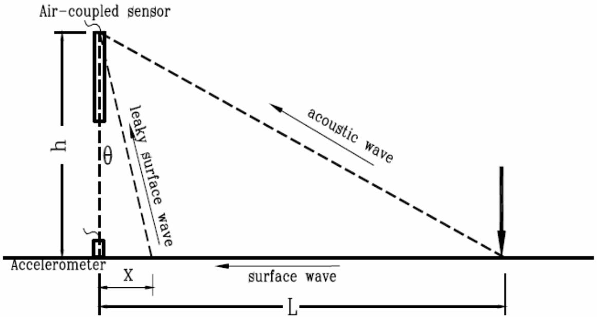
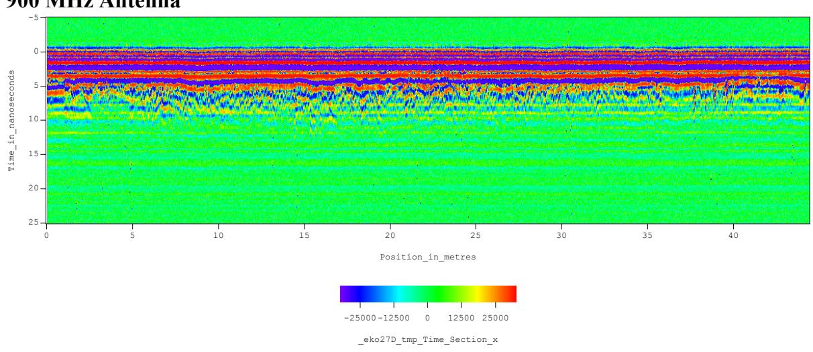
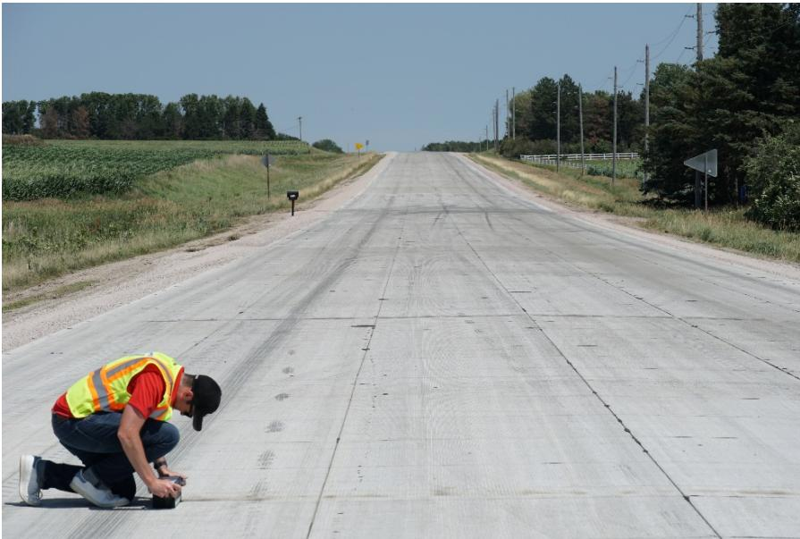
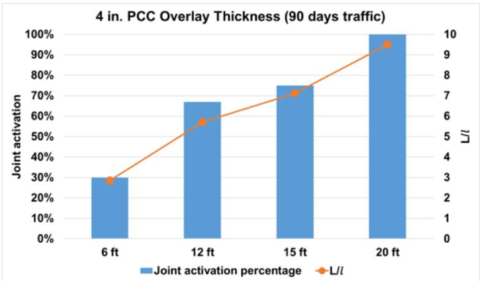
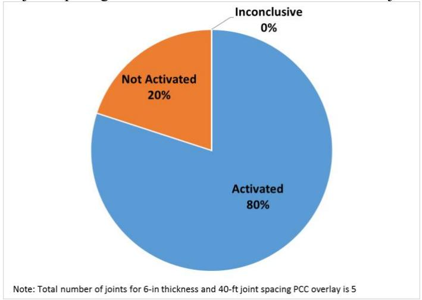
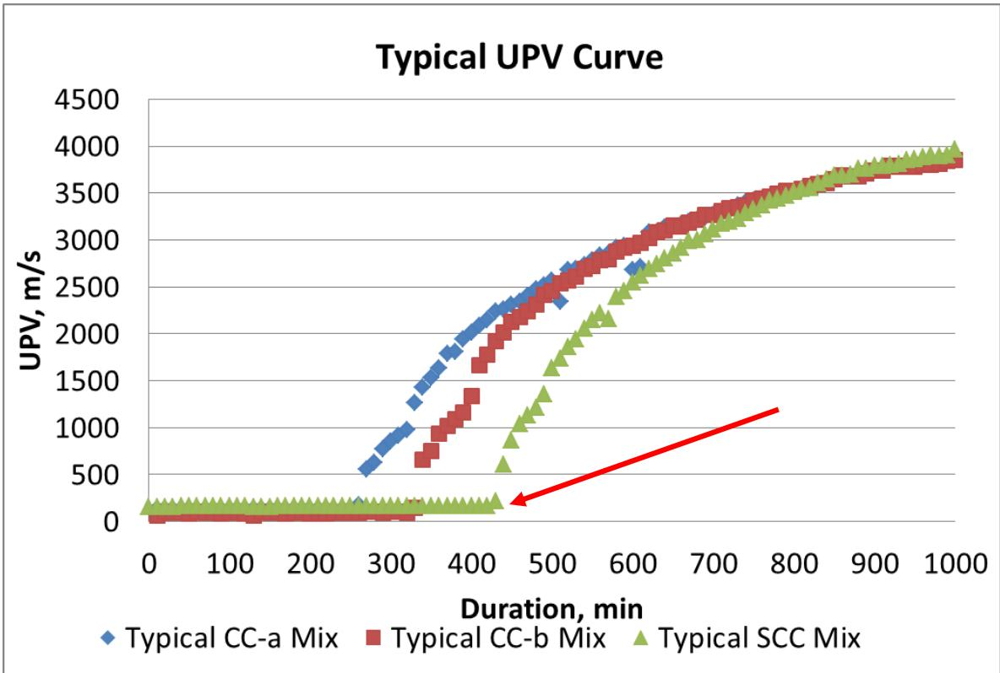
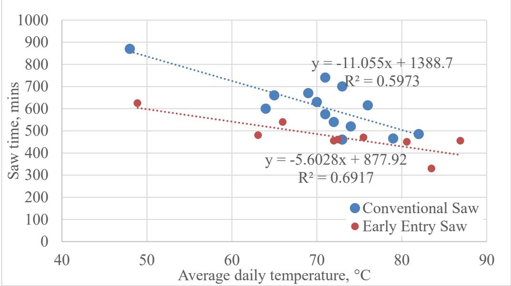

Stress-Wave & Sonic Methods
Stress-wave and sonic methods are nondestructive evaluation techniques that assess material integrity and detect defects by analyzing the propagation, reflection, or transmission of mechanical energy through a medium. These methods rely on the fundamental principle that the speed, attenuation, and dispersion characteristics of elastic waves correlate directly with the physical properties of the material, such as stiffness, density, and internal structure [1]. By measuring how acoustic signals travel through a specimen, these techniques can characterize mechanical states, monitor hydration progress, and identify subsurface flaws without impairing the component’s usefulness [2] [3].
CP Tech Center reports covering “Stress-Wave & Sonic Methods” also include the following subtopics: Air-Coupled Surface Wave Sensing, Impact-Echo, MIRA Ultrasonic Testing, Spectral Analysis of Surface Waves (SASW), and Ultrasonic Pulse Velocity.
Stress-Wave & Sonic Methods rely on the propagation, reflection, or transmission of mechanical energy to evaluate material properties and structural health. Air-Coupled Surface Wave Sensing employs directional microphones to detect leaky surface waves for remote sensing. Impact-Echo evaluates structural integrity by analyzing reflected stress waves in the frequency domain to locate subsurface flaws. MIRA Ultrasonic Testing employs multichannel pitch-catch arrays to detect joint activation and crack deployment in concrete pavements. Spectral Analysis of Surface Waves (SASW) characterizes subsurface layer stiffness by measuring wave speed variations across different wavelengths. Ultrasonic Pulse Velocity assesses concrete condition by tracking hydration progress and strength development through the measurement of sound transmission speeds.
Sources (8)
Sub-concepts (5)
Fundamentals
Stress-wave and sonic methods constitute a category of nondestructive evaluation that assesses material integrity by analyzing the propagation characteristics of elastic waves through a medium without causing damage [2]. These techniques rely on physical principles where wave behavior, such as velocity, attenuation, and dispersion, correlates with the mechanical properties and internal structure of the inspected component. The field encompasses various approaches classified by their specific excitation mechanisms and detection modalities, ranging from contact-based ultrasonic measurements to non-contact surface wave sensing [2].
The following figure illustrates the impact-echo method as a specific application of these nondestructive evaluation techniques.

Illustration of the impact-echo method showing wave propagation, reflection from a flaw, and resulting signal graphs. [2]The figure depicts an experimental setup where a mechanical impact generates stress waves that propagate through a solid medium containing a subsurface flaw. A receiver measures the resulting surface displacement, which is plotted as a function of time showing an initial pulse followed by oscillations with a specific period delta-t. The basic principle of the impact-echo technique is illustrated the figure, where the solid object is struck sharply with a mechanical impactor and reflected waves are analyzed to detect flaws or boundaries.
Key findings
- Identified that the primary limitation of stress-wave and sonic methods is the high level of expertise required for data interpretation rather than hardware constraints, driving a shift toward software-driven data fusion to reduce reliance on specialized operator knowledge [2].
- Demonstrated that ultrasonic pulse velocity measurements of initial set provide a reliable basis for predicting sawing windows across diverse concrete mixtures and aggregate types, with early entry sawing indicated approximately 220 minutes after detected initial set [3].
- Observed that stress-wave propagation characteristics in joint activation assessment are primarily governed by the ratio of slab length to radius of relative stiffness rather than traffic volume or fiber reinforcement, with a stiffness ratio between 4 and 7 optimizing structural performance [4].
- Revealed that field applicability of air-coupled surface wave sensing is constrained by ambient traffic noise from heavy vehicles, which can degrade signal-to-noise ratios below usable thresholds despite high performance in controlled settings [1].
- Showed that sonic-based technologies must operate near the limits of their current accuracy and precision to support network-level inventory management for indirect deflection measurements and direct assessment of pavement system modulus [1].
- Reported that these techniques currently lack the mobility needed for efficient, large-scale pavement surveys compared to ground penetrating radar, limiting their widespread adoption for rapid infrastructure inventory [2].
Field Implementation and Operational Constraints
Evidence: 3 reports (2 primary)
Field implementation of stress-wave and sonic methods involves deploying transducers to generate and receive elastic waves that propagate through layered media, allowing for the characterization of mechanical properties like stiffness and integrity [1]. Operational constraints are often dictated by the need to analyze dispersion characteristics of surface waves, such as Rayleigh or Lamb waves, which provide critical data regarding shear wave velocity profiles with depth [1]. These techniques enable rapid scanning and material characterization by correlating wave speed and attenuation with subsurface conditions, though the complexity of layered media requires careful interpretation of the resulting data [1].
The following figure illustrates a leaky surface wave detection scheme using an air-coupled transducer.

Leaky surface wave detection scheme using an air-coupled transducer [1]The figure illustrates a nondestructive evaluation setup where an impact source generates waves in a layered medium, which are detected by both a contact accelerometer and a remote air-coupled sensor. This configuration demonstrates the use of guided waves for material characterization, specifically showing how leaky surface waves emitted from a concrete slab are detected by a directional microphone to measure dispersion curves and estimate stiffness profiles.
Research problem — The reliance on specialized operator expertise for signal interpretation creates a barrier to the widespread adoption of stress-wave methods in large-scale pavement management, particularly when compared to more automated alternatives [2]. Current nondestructive techniques often require physical contact with the surface or traffic interruptions, rendering them unsuitable for high-speed, continuous network-level surveys that demand rapid data collection [1] [2]. There is a critical need to systematically evaluate the accuracy and variability of emerging nondestructive inspection systems against traditional destructive methods to enable their adoption for real-time material integrity verification [5].
State of the art — The field is transitioning from traditional contact-based stress-wave techniques toward high-speed, non-contact methods to enable rapid data acquisition over large areas [1] [2]. Operational implementation remains constrained by the need for highly trained interpreters, susceptibility to ambient noise interference, and mechanical stability challenges during mobile scanning [1] [2]. Current development priorities focus on enhancing software-driven interpretation, integrating data fusion with complementary technologies like ground-penetrating radar, and improving signal-to-noise ratios for network-level evaluation [1] [2].
The following figure illustrates high-resolution GPR data from P 73 to demonstrate the integration of complementary technologies for improved signal interpretation.

High-Resolution GPR Data from P 73 (note lack of distress features in signal) [2]The figure displays a ground-penetrating radar (GPR) time-section plot showing signal amplitude variations over distance and travel time. The plot illustrates a high-resolution survey of a concrete pavement section, demonstrating how subsurface features are characterized through signal reflection.
Findings from the reports
- Identified that the primary limitation of stress-wave and sonic methods is not hardware but the high level of expertise required for data interpretation, driving a shift toward software-driven data fusion to reduce reliance on specialized operator knowledge [2].
- Demonstrated that air-coupled surface wave sensing can measure concrete wave velocity as a proxy for stiffness using laboratory experiments with impact sources and microphone arrays, though field applicability remains constrained by ambient traffic noise [1].
- Showed that while sonic-based technologies are theoretically viable for network-level structural evaluation, significant technical challenges regarding sensor array design, vibration compensation, and signal-to-noise ratios persist in real-world highway environments [1].
- Revealed a critical trade-off where environmental noise from heavy vehicles can degrade performance below usable thresholds, requiring methods to operate near the limits of their current accuracy and precision for network-level inventory management [1].
- Observed that these techniques currently lack the mobility needed for efficient, large-scale pavement surveys compared to ground penetrating radar, limiting their widespread adoption for rapid infrastructure assessment [2].
Novelty & rigor — Novel field implementations prioritize non-contact, high-speed scanning platforms that utilize moving vehicles and air-coupled sensing to overcome the mobility limitations of traditional stress-wave methods during in-service operations [1] [2]. Operational rigor is challenged by significant ambient noise interference and mechanical vibrations that degrade signal quality, necessitating advanced data fusion and automated visualization tools to reduce reliance on expert judgment for accurate interpretation [1] [2] [5]. Reproducible application requires integrating specific characterization equipment with mechanistic design procedures and rigorous construction simulations to validate distress detection against physical core samples and ensure compatibility with continuous quality assurance workflows [2] [5].
The following figure illustrates a key implementation of these advanced scanning technologies.
 Seismic Pavement Analyzer (SPA) vehicle and trailer setup. [1]
Seismic Pavement Analyzer (SPA) vehicle and trailer setup. [1]
The image displays a red and white van towing a specialized two-axle trailer equipped with vertical metal posts, which is identified as the Seismic Pavement Analyzer (SPA). This apparatus is used for pavement structure evaluation and incorporates seismic techniques such as Ultrasonic Body-Wave, Impact Echo, and Spectral Analysis of Surface Waves. By applying loads to produce surface waves that are registered by sensors, the device assesses material integrity through stress-wave and sonic methods.
While these techniques are theoretically viable for network-level structural evaluation, their practical deployment is hindered by the high level of expertise required for data interpretation and the current lack of mobility compared to ground penetrating radar. Consequently, the field is shifting toward software-driven data fusion and visualization tools to mitigate reliance on specialized operator knowledge while addressing technical challenges related to sensor array design and signal-to-noise ratios. [1] [2]
Implications — Practical deployment must prioritize software advancements that facilitate data visualization and fusion to mitigate the bottleneck of expert interpretation, rather than focusing solely on hardware improvements [2]. Operational strategies for large-scale inspection require balancing mobility with signal clarity, acknowledging that these methods lack the high-speed survey capability of other technologies but provide complementary subsurface insights [2]. Widespread adoption for network-level management is currently constrained by environmental and mechanical challenges such as ambient noise and sensor vibration, necessitating further validation in controlled settings to verify accuracy and precision limits [1].
Limitations — The reliance on expert interpretation and the absence of automated diagnostic software create significant barriers to widespread adoption without specialized personnel [2]. Operational deployment is hindered by environmental interference, such as traffic noise and vibration, which can degrade signal quality below usable levels during high-speed surveys [1]. Practical implementation faces unresolved challenges regarding the validity of acoustic attenuation as a condition indicator and the development of robust, low-cost sensor arrays suitable for continuous monitoring [1].
Wave Propagation Mechanics and Material Response
Evidence: 3 reports (1 primary)
Research problem — Researchers seek to determine how wave propagation mechanics can reliably distinguish between structural distress caused by design parameters and inherent material degradation or simple joint activation [4]. There is a need to correlate non-destructive internal assessments of acoustic integrity with long-term surface performance metrics under varying environmental and operational conditions [4]. The field requires robust methods for validating material behavior and interface continuity in composite systems to accurately predict fatigue life and pavement smoothness [6].
Findings from the reports
- Evaluated the nondestructive assessment of joint activation in concrete overlays by detecting air gaps via reflected ultrasonic pulses, revealing that longer transverse joint spacing and greater overlay thickness significantly increased the percentage of activated joints [4].
- Demonstrated that stress-wave propagation characteristics in concrete overlays are primarily governed by the ratio of slab length to radius of relative stiffness rather than traffic volume or fiber reinforcement [4].
- Identified joint spacing as the predominant factor influencing activation behavior in newly constructed test sections, establishing the L/ℓ ratio as a key indicator for optimizing concrete overlay design [4].
- Observed discrepancies between ultrasonic detection and visual confirmation of joint activation, particularly in sections with shorter spacing, highlighting practical limitations in distinguishing specific defect types using shear-wave tomography [4].
Novelty & rigor — Novelty in this area centers on the application of normalized energy ratios from transmitted stress waves to quantify joint activation and optimize structural design criteria, rather than developing new sensing mechanisms [4]. Reproducibility relies on standardized field protocols that combine specific tomography testing frequencies with rigorous metadata collection regarding traffic loads and environmental conditions to ensure consistent evaluation of material response [7] [6] [4].
The figure below illustrates MIRA testing on a concrete pavement to demonstrate the practical application of these methods in assessing joint activation.

Field technician performing MIRA testing on a concrete pavement joint. [6]A field worker wearing high-visibility safety gear is crouching on a rural concrete road to operate a handheld ultrasonic device. The MIRA operates using a pitch-catch method, where one transducer emits an ultrasonic pulse while the rest receive the pulse. This setup is used to assess joint activation in concrete pavements by analyzing how acoustic signals travel through the material.
Implications — Designers should target a slab length to radius of relative stiffness ratio between four and seven to balance timely joint activation with structural performance [4]. Sonic evaluation methods can guide spacing decisions more effectively than traditional traffic-based metrics alone by detecting air gaps that indicate unactivated joints [4].
The figure below illustrates how joint activation varies with the slab length to radius of relative stiffness ratio and joint spacing in the Mitchell County concrete overlay test sections.

Joint activation vs. L/ℓ and joint spacing for Mitchell County concrete overlay test sections [4]The figure displays a dual-axis chart plotting the percentage of joint activation against four different slab lengths, showing that activation rates increase as the length increases. An orange line representing the ratio of L/ℓ trends upward alongside the blue bars for joint activation percentage, indicating a positive correlation between these variables.
Limitations — Interpretative ambiguities arise when assessing joint activation in thin concrete overlays, as specific energy ranges are classified as inconclusive due to the difficulty in distinguishing tight cracks from their absence [4]. The application of these methods is constrained by sample size limitations in field reviews and a lack of correlation with traffic volumes [4].
The figure below illustrates how joint activation percentages vary across different spacings in these thin concrete overlays.

Pie chart showing the percentage of joints activated in concrete overlays. [4]The figure displays a pie chart illustrating that the majority of joints were classified as ‘Activated’ while a smaller portion was ‘Not Activated’. As shown the figure, most of the joints were activated in overlays more than 10 years old. This figure illustrates a specific result regarding joint activation status, which is an application of nondestructive evaluation methods used to assess concrete pavement conditions.
Process Monitoring and Scheduling Applications
Evidence: 2 reports (2 primary)
Process monitoring and scheduling applications leverage the correlation between acoustic wave propagation speed and material stiffness to track hydration progress in real time [3]. By observing the transition from fluid-like behavior to rigid solid structure, these systems can identify critical state changes such as initial set without requiring physical sampling [3].
The figure below illustrates typical ultrasonic pulse velocity data where the initial set is identified by the onset of rising wave velocity.

Typical UPV data with initial set taken as the time when the velocity starts to rise, as marked [1] [3]The figure displays ultrasonic pulse velocity (UPV) curves for three different concrete mixtures plotted against duration in minutes. Each curve exhibits a period of low, stable velocity followed by a sharp increase where “the speed of sound accelerates”. A red arrow indicates the onset of this rise as the point corresponding to initial set, demonstrating how acoustic wave propagation speed correlates with material stiffness during hydration.
Research problem — Conventional nondestructive evaluation methods often fail to provide timely, comprehensive data on concrete properties such as strength and air void distribution [8]. The industry faces a critical challenge in determining optimal saw-cutting windows for concrete pavements, where subjective judgment often leads to premature raveling or delayed random cracking [3].
State of the art — Stress-wave and sonic methods are currently utilized to objectively determine concrete setting times, which optimizes saw-cutting schedules and reduces disputes arising from subjective judgment [3]. Ultrasonic pulse velocity has emerged as a robust field technique for predicting initial set, offering superior correlation compared to thermal-based calorimetry [3].
The relationship between conventional sawing times and initial set predictions derived from ultrasonic pulse velocity measurements is illustrated in the following figure.
 (b). Conventional sawing time versus initial set from UPV measurements [3]
(b). Conventional sawing time versus initial set from UPV measurements [3]
The figure plots a positive linear correlation between the UPV Initial Set and Sawing time, demonstrating that Ultrasonic Pulse Velocity (UPV) can be used to predict optimal concrete setting times.
Findings from the reports
- Established a measurable relationship between ultrasonic pulse velocity (UPV) and concrete permeability, introducing the Paste Quality Loss (PQL) parameter to quantify durability based on longitudinal wave propagation [8].
- Demonstrated that UPV effectively predicts the optimal sawing window for concrete pavements by correlating initial set times with field operations across diverse aggregate types [3].
- Showed that early entry sawing begins approximately 220 minutes after the detected initial set via UPV, whereas conventional sawing commences roughly 310 to 390 minutes post-set [3].
- Revealed that wave propagation timing effectively captures hydration-driven stiffening relevant to saw-cutting readiness, providing a reliable basis for scheduling cuts regardless of aggregate composition [3].
Novelty & rigor — The introduction of Paste Quality Loss as a novel nondestructive parameter derived from ultrasonic pulse velocity enables the quantification of concrete permeability and durability at early ages, providing a feedback mechanism for intelligent health monitoring that moves beyond traditional compressive strength assessments [8]. Applying ultrasonic measurements to monitor real-time hydration states allows for the precise prediction of optimal saw-cutting windows, offering a more reliable alternative to thermal-based calorimetry under varying field conditions [3]. Reproducibility requires in situ data collection using commercial ultrasonic devices with specific transducer frequencies and gel couplants on fresh concrete samples exposed to identical weather conditions as the pavement slab [3].
Across the reviewed reports, ultrasonic pulse velocity serves as a critical metric for process monitoring by correlating wave propagation characteristics with both material durability and operational scheduling windows. While one study utilizes these measurements to establish Paste Quality Loss parameters for early-age health monitoring of bridge decks, another demonstrates that the same velocity data reliably predicts optimal sawing windows for concrete pavements based on hydration-driven stiffening. Collectively, these findings indicate that stress-wave methods provide a unified framework for scheduling construction activities and assessing structural integrity by linking acoustic response times to physical changes in concrete maturity. [3] [8]
The relationship between ultrasonic pulse velocity and early-age concrete properties is illustrated in the following figure.
 (a). Early entry sawing time versus initial set from UPV measurements [3]
(a). Early entry sawing time versus initial set from UPV measurements [3]
The figure displays a scatter plot correlating the UPV Initial Set in minutes with Sawing time in minutes, demonstrating that ultrasonic pulse velocity can be used to predict optimal construction windows.
Implications — Contractors should adopt stress-wave monitoring to objectively determine optimal sawing windows, thereby reducing reliance on subjective judgment and mitigating financial disputes over cracking or raveling [3]. Standardizing construction timing through sonic methods allows for consistent scheduling across diverse mixtures and aggregate types, addressing the industry-wide challenge of inconsistent setting time assessment [3].
The following figure illustrates how average ambient temperature influences optimal sawing times.

The relationship between average ambient temperature and saw time for conventional and early entry sawing methods. [3]The figure plots the elapsed time required to cut concrete against the average daily temperature, showing a negative correlation where higher temperatures result in shorter saw times.
Limitations — Predictive models rely on site-specific calibration curves rather than universal constants, as performance varies significantly with aggregate hardness and mixture chemistry [3]. Standard wave propagation metrics do not fully account for variability introduced by equipment characteristics such as sawing machine weight and blade configuration [3].
Related concepts
In this hierarchy
- Parent: Condition Evaluation & Nondestructive Testing
- Child: Air-Coupled Surface Wave Sensing
- Child: Impact-Echo
- Child: MIRA Ultrasonic Testing
- Child: Spectral Analysis of Surface Waves (SASW)
- Child: Ultrasonic Pulse Velocity
Related by shared evidence
- Concrete Pavement Joint — shares 7 reports
- CP Tech Center Reports — shares 7 reports
- Transverse Cracking — shares 7 reports
- International Roughness Index (IRI) — shares 6 reports
- Longitudinal Cracking — shares 6 reports
- Slab Design & Geometry — shares 6 reports
- Concrete Materials & Mixtures — shares 5 reports
- Concrete Overlay — shares 5 reports
Similar topics
- MIRA Ultrasonic Testing
- Impact-Echo
- Spectral Analysis of Surface Waves (SASW)
- Ultrasonic Pulse Velocity
- Condition Evaluation & Nondestructive Testing
- Air-Coupled Surface Wave Sensing
- Ground Penetrating Radar (GPR)
- Electromagnetic & Thermal Methods
References
- B. M. Phares, H. Ceylan, R. Souleyrette, O. Smadi, and K. Gopalakrishnan, "Development of a High Speed Rigid Pavement Analyzer – Phase I Feasibility and Need Study," National Concrete Pavement Technology Center, Ames, IA, Rep. TPF-5(136), 2008. [Online]. Available: https://www.intrans.iastate.edu/wp-content/uploads/2018/03/high_speed_pvmt_analyzer_w_cvr.pdf
- S. Schlorholtz, B. Dawson, and M. Scott, "Development of In Situ Detection Methods for Materials-Related Distress (MRD) in Concrete Pavements: Phase 1," Center for Portland Cement Concrete Pavement Technology, Iowa State University, Ames, IA, Rep. CTRE 00-96, 2003. [Online]. Available: https://www.intrans.iastate.edu/wp-content/uploads/2018/03/mrd.pdf
- P. Taylor and X. Wang, "Comparison of Setting Time Measured Using Ultrasonic Wave Propagation with Saw-Cutting Times on Pavements," National Concrete Pavement Technology Center, Ames, IA, Rep. TR-675, 2015. [Online]. Available: https://www.intrans.iastate.edu/wp-content/uploads/2018/03/PCC_setting_time_and_joint_sawing_w_cvr.pdf
- J. Gross, D. King, H. Ceylan, Y. A. Chen, and P. Taylor, "Optimized Joint Spacing for Concrete Overlays with and without Structural Fiber Reinforcement," National Concrete Pavement Technology Center, Ames, IA, Rep. TR-698, 2019. [Online]. Available: https://www.intrans.iastate.edu/wp-content/uploads/2019/06/optimized_joint_spacing_for_overlays_w_cvr.pdf
- D. Harrington, R. Rasmussen, D. Merritt, T. Cackler, and P. Taylor, "Long-Term Plan for Concrete Pavement Research and Technology—The Concrete Pavement Road Map (Second Generation): Volume II, Tracks (FHWA-HRT-11-070)," National Center for Concrete Pavement Technology, Iowa State University, Ames, IA, 2012. [Online]. Available: https://www.fhwa.dot.gov/publications/research/infrastructure/pavements/pccp/11070/11070.pdf
- D. King, B. Yang, P. Taylor, and H. Ceylan, "Field Performance of Fiber-Reinforced Concrete Overlays," Institute for Transportation, Iowa State University, Ames, IA, Rep. TR-816, 2025. [Online]. Available: https://www.intrans.iastate.edu/wp-content/uploads/2025/05/field_performance_of_frc_overlays_w_cvr.pdf
- J. Gross, D. King, D. Harrington, H. Ceylan, Y. A. Chen, S. Kim, P. Taylor, and O. Kaya, "Concrete Overlay Performance on Iowa's Roadways (Field Data Report)," National Concrete Pavement Technology Center, Ames, IA, Rep. TR-698, 2017. [Online]. Available: https://www.intrans.iastate.edu/wp-content/uploads/2017/09/Iowa_concrete_overlay_performance_w_cvr.pdf
- J. Grove, G. Fick, T. Rupnow, and F. Bektas, "Material and Construction Optimization for Prevention of Premature Pavement Distress in PCC Pavements," National Concrete Pavement Technology Center, Ames, IA, Rep. TPF-5(066), 2008. [Online]. Available: https://www.intrans.iastate.edu/wp-content/uploads/2018/03/mco-final.pdf
Feedback on this page